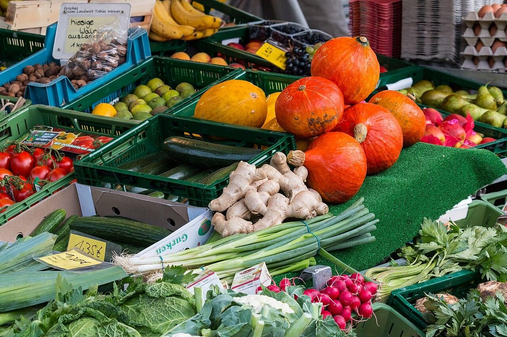
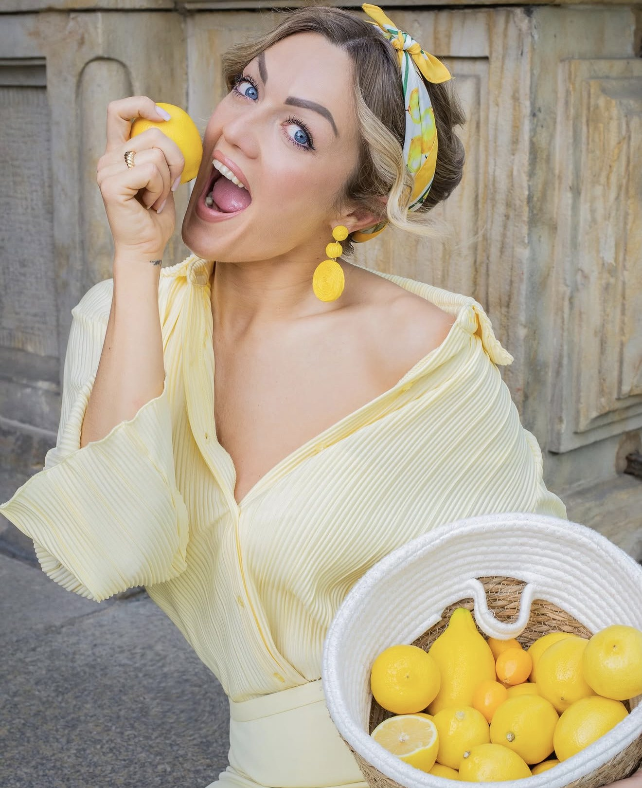
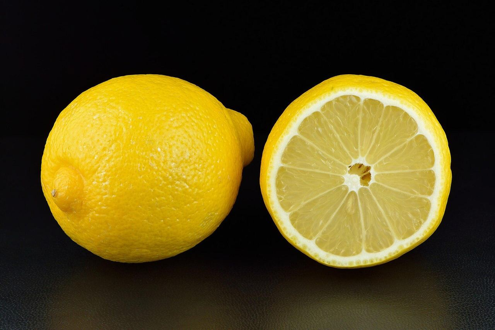
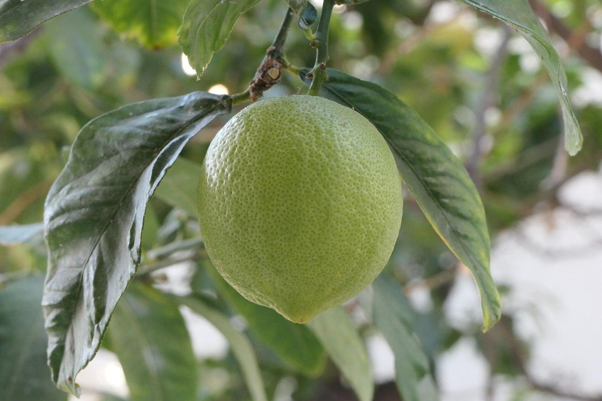
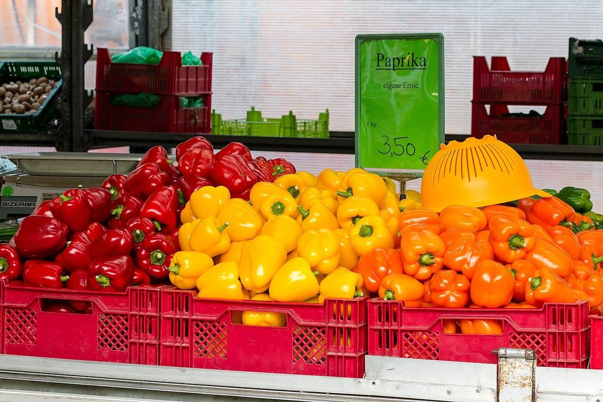
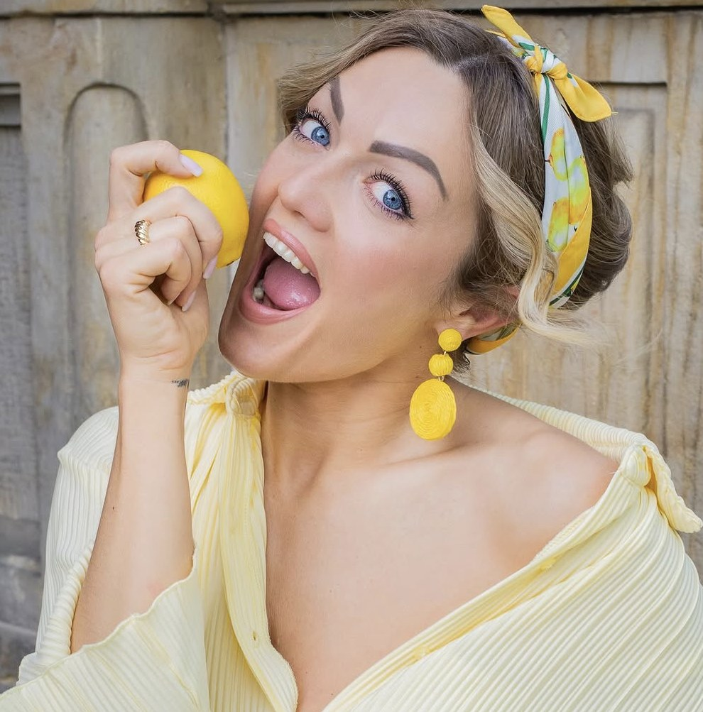

01
Раціон
Збалансовані тарілки зі звичних продуктів. Ви знаєте, що поєднувати, а не що забороняти.
Допомагаю жінкам вибудувати раціон і звички з урахуванням циклу, гормонів і ритму життя. Без жорстких дієт, заборон і почуття провини.


Не шаблонне меню, а система, яка підлаштовується під ваше тіло, графік і смаки.

Збалансовані тарілки зі звичних продуктів. Ви знаєте, що поєднувати, а не що забороняти.

Враховуємо цикл, сон і рівень стресу, бо в різні дні місяця тіло потребує різного.

Маленькі кроки щотижня, які залишаються з вами надовго, а не до наступного понеділка.
Три питання, і ви побачите, з чого варто почати.
Перше знайомство безкоштовне: поговоримо 20 хвилин і зрозуміємо, чи підходимо одна одній.
Для тих, хто хоче розібратися і діяти самостійно.
Разом вибудовуємо раціон і звички, я на зв'язку весь місяць.
Глибока робота для стійкого результату.
* У демо формати і ціни для прикладу, підставимо ваші.

Я допомагаю жінкам налагодити стосунки з їжею і власним тілом. Мій підхід простий: спершу зрозуміти, як працює саме ваш організм, а вже потім складати раціон.
У своєму блозі я розповідаю про особливості жіночого організму, а на консультаціях перетворюю ці знання на конкретний план, який легко вписати у ваше життя.
Уляна
* Текст про вас напишемо разом з вами.
«Нарешті я не голодую і не зриваюсь на солодке ввечері. Енергії стало більше вже за два тижні.»
Марина · супровід 4 тижні«Вперше хтось пояснив, чому моє самопочуття так змінюється протягом місяця. Тепер я знаю, що їсти в різні дні.»
Олена · програма 3 місяці«Жодних заборон, а результат є. Звички справді залишились, навіть після завершення.»
Ірина · консультація* У демо відгуки для прикладу. На сайті будуть ваші справжні відгуки.
Онлайн, у зручний для вас час. Підходить з будь-якої країни.
Ні. Ми будуємо раціон зі звичної їжі і вчимося правильно її поєднувати.
Ні. Я працюю з харчуванням і звичками. Якщо є медичні питання чи діагнози, раджу звернутися до лікаря, а раціон узгодимо з його рекомендаціями.
Більшість жінок помічають більше енергії і менше тяги до солодкого вже за 2–3 тижні.
20 хвилин, щоб поговорити про ваші цілі і зрозуміти, який формат підійде.
Це демо: фото, тексти, формати і ціни замінимо на ваші. Ось чому сайт працюватиме на вас.
Посилання в шапці профілю веде не в Direct, а на сторінку, де все пояснено: підхід, формати, ціни, відгуки. Людина приходить уже готовою записатися.
Короткий тест показує, який формат підходить. Жінка відчуває, що її зрозуміли, і частіше обирає супровід, а не разову зустріч.
Жінки шукають «нутриціолог для жінок онлайн», «харчування і цикл». Сайт налаштуємо під ці запити, щоб вас знаходили не лише в Instagram.
Ціни, формат, тривалість і «як проходить» уже на сайті. Ви спілкуєтеся з тими, хто вирішив працювати.
Власний сайт виглядає професійно і виділяє вас серед блогерів, які працюють лише через Direct.
Домен, хостинг на перший рік і налаштування Google беремо на себе. Зміни вносимо за вашим повідомленням.
Так ваш сайт може виглядати в Google (адреса для прикладу). Демо підготувала команда Krayon · krayon.site